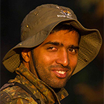
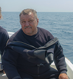
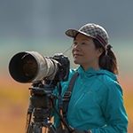
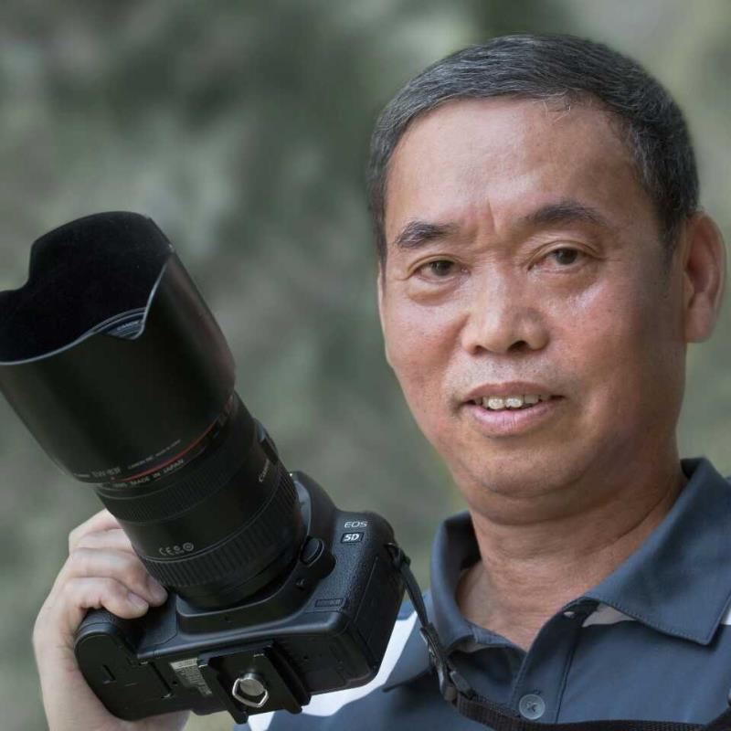
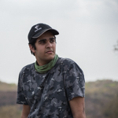
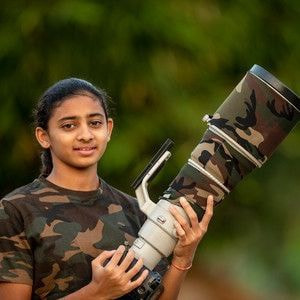
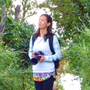

winners gallery 2020
GRAND PRIZE


Family Time
Tanjung Puting National Park, Indonesia
Tatsuya Okuda
Tokyo, Japan
Photographer's Website
CAMERA: Canon 5D Mark IV, Canon EF600mm f/4L IS II USM + EF1.4x III, 1/640, F/7.1, ISO 1600.
Wildlife

WINNER WILDLIFE
Story: 青海チベット高原、青海省ゴルムド市クンルン山、バイソンディッチで撮影。クンルンマウンテンの奥地で野生動物を撮影しました。標高4,600メートルの場所では、雪で山が閉ざされると、放牧動物が餌を求めて下のガリーに移動します。遠くに、オオカミの頭に率いられた11頭の狼の群れが見えました、オオカミは低い高度で狩りをするために山の尾根を急いで下っていました。CAMERA: Nikon D5, AF-S NIKKOR 500mm f/5.6E.
HIGHLY HONORED WILDLIFE
Story: オオトカゲはこの地域に広く生息しています。彼らは非常にシャイで、人間を避けます。 視力は鋭く約250m 離れた人間の動きを察知できます。シロアリの塚を住処にすることもあります。この写真は2018年10月にインドのカルナータカ州で撮影しました。草原を探検していると、シロアリの塚にいるトカゲを発見しました。私は迷彩服を着てそっと地面に横になりトカゲがシロアリの塚の穴に姿を消すまで撮りつづけました。満足できる写真が撮れるまで約2時間近くかけました。自然の生息地でオオトカゲに近づき撮影をし、素晴らしい経験が出来ました。
CAMERA: Canon EOS 7D Mark II, Canon 55-250 mm f/4.0-5.6 IS, 1/1000, F/9, ISO 2500.
HIGHLY HONORED WILDLIFE

Water Bufalo
Kaziranga National Park, India
Marek Jackowski
Wielkopolska, Poland
Photographer's Website
CAMERA: Nikon D5, Nikkor 500 mm f/4 VR FL ED IF at 500 mm, 1/250, F/10, ISO 800.
HIGHLY HONORED WILDLIFE
Story: これはFan Throated Lizardというトカゲです。雑誌でこのトカゲを初めて見た時、鮮やかなノドの色に魅了され、絶対自分のカメラでいつか撮りたいと思っていました。調べてみると、インドのプネに生息していることが分かりました。そこは岩場が多い場所です。私は１時間ほどの間このトカゲの後をついて歩きました。季節は真夏で地面に横たわるのはとても困難です。そんな中、トカゲが草につかまり立ちあがり、その瞬間私は多くの写真を撮りました。この時はちょうど繁殖期で、オスは自分の綺麗なノドをメスに見せる行為をしていました。
CAMERA: Nikon D500, AF-S NIKKOR 200-500MM F/5.6E ED VR, 1/640, F/6.3, ISO 160.

HIGHLY HONORED WILDLIFE

Story: インド･Tungnathにはヒマラヤタールが多く生息しています。忍耐強く行動すれば、ヒマラヤタールにかなり近ずくことが出来ます。ある朝、尾根を越えて牧草地にいる大きなサイズのグループを見つけ、広角ショットで撮影をしようと試みました。私は50mmレンズを装着し、存在を潜めてそっと近づいていきました。かなりの距離まで近づけたのですが、私に気づくなり驚いて散らばってしまいした。私は急いで何枚も撮り、その中の1枚がこれです。ヒマラヤタール達は私が何をしているのか一瞬確認するようにこちらを見ていましたがその後すぐにまた散ってしまいました。
Himalayan Tahrs in Habitat
Tungnath, India
Praveen Purohit
Viratnagar, India
Photographer's Website
CAMERA: Canon EOS 7D Mark II, Canon 50mm f/1.8, 1/500, F/5.6, ISO 1000.
HIGHLY HONORED WILDLIFE
Story: バイカルアザラシは、バイカル湖に生息する世界で3種類しかいない淡水アザラシの1種です。生まれたばかりのアザラシの赤ちゃんは最初、白から灰色がかった毛皮になり徐々に黒っぽくなります。好奇心が強く、用心深い大人のバイカルアザラシを遠くから見ることはよくあります。夏の間バイカル湖で観光客は、水から数秒間現れる大きな黒い目をしたかわいい顔のアザラシを見ることができます。時々、海岸の岩の上にいるのを見ることができますが、近づこうとする瞬間に水中に潜ってしまいます。一方でアザラシの赤ちゃんの撮影はとてもまれです。バイカル湖に住む人でさえ、赤ちゃんを見ることはめったにありません。赤ちゃんは冬に生まれ、絶えず氷の穴に隠れています。まれに氷の動きが激しく割れると水上で見つかる場合があります。これは水面に這いあがってきたところをなんとか撮影できた一枚です。
CAMERA: Nikon D800E, Nikon 24-120mm f/4G ED VR AF-S @ 48 mm, 1/500, F/6.7, ISO 200.
LANDSCAPE
WINNER LANDSCAPE
Story: 蛍が飛び交う滝というコンセプトで撮影に臨んだ。蛍といえば日本を代表する初夏の風物詩の虫だ。撮影当時は満月だった。蛍は月明かりがあると飛びにくくなる習性があるので事前に調べた天気予報が曇りの日を撮影日に選んだ。予測通り厚い雲が月を隠してくれて月明かりの影響をあまり受けずに蛍の美しい光跡を撮影できた。低ノイズに画像処理をしたかった為、一枚の撮影時間は90秒前後として後に比較明合成にて画像処理をしている。CAMERA: SONY ILCE-7RM3, SONY SEL24-70GM, 91 seconds, F/4, ISO 200.

HIGHLY HONORED LANDSCAPE
Story: 日本を代表する山、富士山を晩秋の時期に峠から撮影しました。突然の雪が降った翌日は無風の晴れ日、綺麗に雪がつもり、その雪景色を前に雲海が広がり、朝日が目の前の光景を染めました。その光景はまるで絵に書いたような冬景色でした。この場所では雪が降る時期に層の厚い雲海を見ることはとても難しいです。雲海を見るには秋の時期がベストですが、冬ではない秋の時期に降り積もった雪景色を見るには、山周りの不安定な気候をしっかり分析し、撮影をチャレンジし続ける覚悟が必要です。そういった背景もあり私にとってこの日の景色は忘れられない、かけがえのないものになっています。CAMERA: SONY α7 SEL1635Z, SONY 31mm, 1/15, F/14, ISO 50.

HIGHLY HONORED LANDSCAPE
Story: 黄山は、中国東部の安徽省南部にある山脈です。ここは全体の景色はもちろん、夕日、特花崗岩の峰、黄山松、温泉、雪、そして雲の上からの眺めが有名です。黄山は、現代の写真だけでなく、中国の伝統的な絵画や文学にもよく登場します。ユネスコの世界遺産であり、中国の主要な観光地です。2019年12月の終わりの冬の間にこの写真を撮りました。とても寒い中長い時間歩いて撮影地まで行きました。
CAMERA: Canon EOS 5D Mark IV, Canon 24-70mm, 1/2, F/22, ISO 200.

HIGHLY HONORED LANDSCAPE
Story: 写真は、2019年6月13日にチベットのナグッルオ郡サプシェンシャンで撮影されました。 ここは2016年に発見された秘境です。陽朔郷の浦西口にある標高6556mの場所に5つの雪山が並んでいます。 写真の雪山はその一つです。 雲と霧が多く厳しい寒さで、通常はめったに行くことが出来ません。 私は標高の高さの問題を乗り越えて標高5000メートルでキャンプしながら非常に困難で危険な撮影の旅をしました。
CAMERA: SONY DSLR-A900, Sony 70-400mm F4.0-5.6 G SSM, 1/1600, F/11, ISO 100.

HIGHLY HONORED LANDSCAPE
Story: 韓国のワンジュ郡にある大屯山はこの地点からは峡谷のように見えるのでＶ谷と呼ばれています。岩の両側には山の影が反映されています。秋には紅葉が綺麗で黄色と赤色で覆われます。CAMERA: Nikon D810, Tamron SP 15-30 F2.8 Di VC, 1/60, F/13, ISO 200.

HIGHLY HONORED LANDSCAPE
Story: これはシベリア上空を飛行しているときに、夕暮れ時に飛行機で撮影したものです。CAMERA: Canon EOS 5D Mark II, Canon 70-200mm, 1/40, F/9, ISO 800.
OCEAN
WINNER OCEAN
Story: コショウダイがきっちりと硬いフォーメーションを作り、攻撃しようとする捕食者を威嚇しています。この中には2種類の魚の群れが入っています。
CAMERA: Canon EOS 5D Mark IV, Canon 15mm Fisheye, 1/3, F/22, ISO 125.

HIGHLY HONORED OCEAN
Story: タイのシミラン海洋国立公園で撮影したものです。突然現れた巨大なジンベイザメはまるでUFOのようでした。
CAMERA: Nikon D810, SIGMA 15mm F2.8 EX DG DIAGONAL FISHEYE, 1/250, F/7.1, ISO 80.

HIGHLY HONORED OCEAN
Story: Melyssa Gardenの海で撮った１枚です。私が経験した中でも特に美しいダイビングサイトです。生き生きとした大きなサンゴ礁が広がります。フィッシュアイレンズを使い長時間露光で撮影しました。露光中にカメラを回転させていると、サンゴの形にぴったり合うグラフィック効果が得られました。CAMERA: Canon EOS 5D Mark IV, Canon 15mm Fisheye, 1/125, F/22.
HIGHLY HONORED OCEAN
Story: 夜のダイビングでは暗くて何が起こるかわからないので楽しみである反面、恐怖でもあります。ある日の夜、私は仲間と一緒にダイビングしていました。水に入ってから数分後、ダイビングガイドが懐中電灯で合図をし、その方向をみるとそこにいたのはフリソデウオでした。私たちは興奮しハイタッチをしました。ゆっくりと追跡し、何枚か写真を撮りました。
CAMERA: Canon 5D MK IV, Sigma 50mm, 1/250, F/22, ISO 640.

HIGHLY HONORED OCEAN
Story: 2019年の年末、Maldivesのダイブクルーズに参加していました。2020年の幕開けとなった朝1本目のダイブでここまで見ることのできなかった念願のマンタが姿を見せました。5,6枚が群れとなり、透明度が高い場所に現れることは珍しく、奇跡のようなひとときでした。まるで我々と遊びながら「Bring it on!!(かかってこい!!)」と言わんばかりの表情をしており、いつも見ているマンタとは一味違う表情が撮影できました。CAMERA: Nikon D850, SIGMA 15㎜ F2.8 EX DG DIAGONAL FISHEYE, 1/200, F/7.1, ISO 160.
HIGHLY HONORED OCEAN

Story: ジャイアントミズダコの天敵はアザラシと人間です。ミズダコは通常昼間には歩き回ることは少なくじっと夜を待っていることが多いので日中に見つけることは今までにありませんでした。このタコはとても大きく自信に満ちているようにゆっくりと砂底の藻の間を移動していました。
Giant Octopus Dofleini Walking
Rudnaya Bay, Russia
Andrey Shpatak
Russia
Photographer's Website
CAMERA: Nikon D800, Sigma 15 mm, 1/60, F/16, ISO 500.
SMALL WORLD
WINNER SMALL WORLD
Story: いつもツムギアリの行動に驚かされます。遭遇すると必ず私は彼らの跡をつけていきます。この２匹のアリがお互いに助け合いながら、どうしたら岩だらけの小道を越えて獲物を持って巣に戻れるかと、苦労をしている姿を追いました。この一枚を撮るのにしばらくの間じっと見つめていましたが、その間アリたちは運ぶための異なる方法を模索していました。そしてようやく方法が見つかりその様子を撮影することが出来ました。CAMERA: Nikon D7100, Tamron SP AF60MM F2.8 Macro, 1/100, F/25, ISO 250.

HIGHLY HONORED SMALL WORLD

The Beaded Chameleon
Karnataka, India
Santhosh Krishnamoorthy
Bangalore, India
Photographer's
Website
CAMERA: Nikon D850, Nikon 105mm f/2.8 Macro, 1/400, F/9, ISO 800.
HIGHLY HONORED SMALL WORLD
Story: タイのトランにある植物園の森で真夜中過ぎに輝く光るものを見つけました。大きなホタルの幼虫は、落葉の上を這うとき、体から一定の輝きを放ちます。無害な外観にもかかわらず、Lamprigera属のホタルは、自身の大きさの何倍もある巨大なカタツムリを食べるほどの貪欲な捕食者です。このホタルは、翼がないことからメスだとわかります。長時間露光して、生物発光を捉えました。
CAMERA: Canon EOS 5DS, Canon EF 16-35mm f/4L IS USM, 33 seconds, F/5.6, ISO 1600.
HIGHLY HONORED SMALL WORLD

Bugs Love
Gopeng, Malaysia
Marcus Kam
Malaysia
Camera: Canon 600D, Canon100mm macro, 1/320, F8, ISO 200; Canon Speedlite 430EX II.

HIGHLY HONORED SMALL WORLD
Story: 小さな昆虫が力を合わせて彼らの食物である蜜を集めている姿がこの写真から見ることが出来ます。一生懸命、家族の為に食料を集めている一方で、その姿はまるで花の美しさに魅了されているようにも見えます。
CAMERA: Nikon D800E, Nikon 105mm, 1/160, F/5, ISO 200, Flash Model:Nikon sb 700.
HIGHLY HONORED SMALL WORLD
Story: このCovid-19パンデミックの間、私たちは皆、家にいることを強いられていました。かといって野生生物の写真撮影がまったく出来ないということではありません。私たちの身の回りには家の中をはじめ、庭にも多くのミクロな世界があります。自宅の庭で、過去にミクロショットを撮影したことがあるので、この日も興味深い被写体を見つけようと探していました。カブトムシが花にとまっていました。私はカブトムシが落ち着くのを待っていましたが、すぐに飛び立ってしまいました。すると今度は美しい白いクモがカブトムシを捉えようと花から出てきました。そのクモは息子が前日に写真を撮ったカニグモでした。クモは花びらの上に静かに乗り完璧なポーズを私の為にしてくれました。
CAMERA: Nikon D850, Tokina 100mm f/2.8 AT-X M100 AF Pro D Macro, 1/125, F/18, ISO 800.
BIRDS

WINNER BIRDS

Story: 毎年、古代生物の一種であるヒマラヤハゲワシを見る為に中国甘粛省に行きます。その日はとても寒く、山頂には日差しはありませんでした。しかし、太陽が現れはじめると、ヒマラヤハゲワシは突然仲間のもとから飛び去り、反対側の崖がる遠くの山々に向かって低く悲しい呼び声を発しました。私はその鳴き声を聞いて美学と人生の悲劇のようなものを感じました。
Himalayan Vulture
Gansu, China
Jiang Yan
Beijing, China
CAMERA: NIKON D5, AF-S NIKON 400mm f/2.8E, 1/2000, F/7.1, ISO 800.
HIGHLY HONORED BIRDS
Craving
Zhejiang, China
Kunping Chen
Zhejiang, China
CAMERA: Canon EOS 5D Mark III, 1/400, F/6.3, ISO 250.
HIGHLY HONORED BIRDS
Story: 写真をはじめてまだ間もない頃、クウェートの保護区であるSabah Al-Ahmadで撮影したものです。魚を狙っている興味深い鳥の一瞬を捕えることが出来ました。
CAMERA: Nikon D7100, Nikon 300mm F4 +1.4 II, 1/2000, F/9, ISO 400.
HIGHLY HONORED BIRDS

Story: 2019年12月の午後、私は広東省の小さな山林で2時間以上撮影をするためにじっと待っていました。３時頃にワシが山の方から飛んできて、獲物を求めてホバリングし、飛び回っていました。 そして突然、ワシは地面に急降下しました。 その時2匹のヘビが草の中を動いていました。ワシはヘビを攻撃し、ヘビも負けずに戦っていました。ワシは鋭いくちばしと爪で攻撃をつづけました。最初はヘビがワシの首と足を絡みつきましたが、次の瞬間にはワシがヘビを振り落とし、10分以上戦いは続きました。ワシがついに勝利し、私は彼らの戦いを高速で撮影し続けました。
The battle
Guangdong, China
Jianjun Luo
Zhejiang, China
CAMERA: Canon EOS-1DX Mark II, Canon EF 600mm f/4L IS III USM, 1/2049, F/4, ISO 250.
HIGHLY HONORED BIRDS
Story: 中国山東省の麦畑で、ファンテールウグイスの母親がヒナに餌を与えています。ヒナは生まれて間もなく飛ぶことを学びます。母鳥はヒナを守りながらエサを与えます。ヒナは飛ぶ練習を始めてから2〜3日で自由に飛ぶことができるようになります。
CAMERA: Canon EOS-1D X Mark II, Canon EF 800mm f/5.6L IS USM, 1/1250, F/6.3, ISO 800.

HIGHLY HONORED BIRDS
Stunt
Beijing, China
Yongkang Li
Zhejiang, China
CAMERA: Canon EOS-1DX Mark II, Canon EF 70-200mm f/2.8L IS II USM + 1.4x III @ 265mm, 1/200, F/4, ISO 800.
JUNIOR

WINNER JUNIOR

Story: メスのトラが、ランタンボアの森の中で娘のトラと寄り添っていました。私たちは道に沿って家族が現れるのを待ちました。彼らが非常に近くに近づいてきたとき、適切な光とシャッタースピードでこのシーンを捉える事に成功しました。
Mother's Tenderness
Ranthambhore National Park, India
Abhikram Shekhawat
Rajasthan, India
Photographer's Website
CAMERA: Nikon D5, Nikkor 400 f2.8, 1/2000, F/2.8, ISO 500.

HIGHLY HONORED JUNIOR

Horny Monster
Negombo, Sri Lanka
Sudith Rodrigo
Negombo, Sri Lanka
CAMERA: Canon 7D, Canon 50mm 1.8 (with 65mm Extension tube), 1/200, F/9, ISO 400.

HIGHLY HONORED JUNIOR
Story: 私は家族とマレーシアに休暇で行き、ランカウイの熱帯雨林に囲まれた場所に滞在していました。それまではヒヨケザルと呼ばれるユニークな哺乳類についてあまり知りませんでした。夕食から部屋に戻ると部屋のすぐ外にある木の幹に奇妙な動物を発見しました。それは異星人のような形をしたユニークな生き物でヒヨケザルだとわかりました。夜行性で木から木へと素早く移動し食べ物を求めて夜間活動します。それから数日間探し続けましたが見つからず諦めかけていると、木の上にいるのを見つけました。私は興奮しながらカメラを取り出しました。すぐ近くにいるので驚きました。しばらくしてからまっすぐ私の方を見てくれたので木の幹にいるこの美しいリラックスした姿を捉えることが出来きて幸運でした。CAMERA: Nikon D500, AF-S NIKKOR 70-200MM F/2.8E FL ED VR, 1/800, F/2.8, ISO 1600.
HIGHLY HONORED JUNIOR
Leopard Greens
Jhalana forest, Jaipur, India
Abhikram Shekhawat
Rajasthan, India
Photographer's Website
CAMERA: Nikon D500, Nikkor 70-200 f2.8, 1/500, F/2.8, ISO 1600.
HIGHLY HONORED JUNIOR

Laver Farm
Xiapu, Zhejiang, China
Raymond Zhang
China
CAMERA: Sony DSC-RX10 M4, 1/500, F/4, ISO 100.

HIGHLY HONORED JUNIOR

Story: ゾウは素晴らしいコミュニケーション方法を持っています。私はゾウに出会う度にコミュニケーション力に感動します。人間がもっと敏感になり、彼らの姿から学ぶことで世界はより良い場所になるのではないでしょうか。
ART OF COMMUNICATION
CORBETT TIGER RESERVE , INDIA
sitara karthikeyan
coimbatore India
Photographer's Website
CAMERA: Canon 1DX, Canon 500mm f/4, 1/400, F/4, ISO 800.
VIDEO
VIDEO WINNER

WILD SPITI - The Ghost Of The Snow
Kibber Wildlife Sanctuary, Lahaul and Spiti district, Himachal Pradesh, India
Kenneth Lawrence
Mumbai, India
Photographer's Website
CAMERA: Canon 5D IV, DJI Mavic Air, GoPro Hero 6 Black
Video Highly Honored

Spring to Summer in Eastern Hokkaido
Tsurui, Hokkaido, Japan
Makoto Ando
Hokkaido, Japan
Photographer's Website
NEEDED
Video Highly Honored

The Bird who Never Gave Up
Gandhinagar, India
Hardik Rathod
Gandhinagar, India
Photographer's Website
CAMERA: Nikon D500, 200-500mm F5.6, F/5.6.
Video Highly Honored
Story: 珍しい種のハエトリグモNeobrettusの生活を撮影したものです。さまざまな状況下での行動パターンを変化させ適応するという、非常に興味深い昆虫です。3mmに満たないサイズ、落ち着きのない性質、乾燥したバナナの葉の下に姿を隠すなど、詳細を観察することやそれを撮影することは困難なことでした。カメラの配置と焦点合わせも課題でした。しかし言うまでもなく、その挑戦の全てが非常に興味深く、充実したものでした。種の共食いは非常に独特の特徴で親に頼らないという一般の常識を越えるものです。レンズを通して11か月以上にわたって観察し、とても小さな存在についての物語を目の当りにすることは、単調である一方で驚くべき経験でした。小さなものすべてが食べ尽くされるわけではなく、生き残ったものは成長し種族を継承していきます。このようにして、「葉の下の生活」は存続していくのです。CAMERA: Nikon D500 & D850 Camera, Nikon 105mm f/2.8 AF-S VR lens and Raynox DCR-250 Super Macro lens, Godox Professional LED Video Light LED308, Manfrotto 055 Tripod with video head MVH500AH
Video Highly Honored
Story: 私はアウトドアガイド、撮影家としてこの地に暮らしている。紅葉が見頃を迎える頃、カヌーに乗っていると空から冬の訪れを告げる白鳥たちの声が聞こえてくる。朝晩の冷え込みは日に日に強まり、やがて雪が降り湖も凍る。厳しく長い冬の始まりだ。冬を越えるとやがて日中の気温はプラスに。徐々に湖の氷が溶け始め、水面に無造作に、そして芸術的にに広がる。そしてその氷が川に流れていく頃、彼らも北へ旅立つ。頬をぬける風が心地よく春の訪れを感じる。彼らとこの地で暮らす約半年間の時間を約3分の動画として表現した。彼らの生きる姿は多くの癒しと感動、学びを与えてくれる。次の秋にまた会えるのが楽しみだ。
{kind=link}
{kind=link}
{kind=link}
{kind=link}
{kind=link}
{kind=link}
{kind=link}
{kind=link}
{kind=link}
{kind=link}
{kind=link}
{kind=link}
{kind=link}
{kind=link}
{kind=link}
{kind=link}
{kind=link}
Video Highly Honored

Story: 大きな命、小さな命、それぞれの命が繋がり、輝く瞬間。風、水、そして光と闇が巡る瞬間。そんな素晴らしい瞬間に出会う度に、自分は生きている、そして生かされている・・・そう感じます。そんな美しい自然がこれからの世代に受け継がれていくことを願いながら、今も撮影を続けています。
Feel the Beauty of Asian Nature
Amami Oshima, Mikura Island, Tokashiki Island, Japan
YUKI KUSACHI
Kanagawa, Japan
Photographer's Website